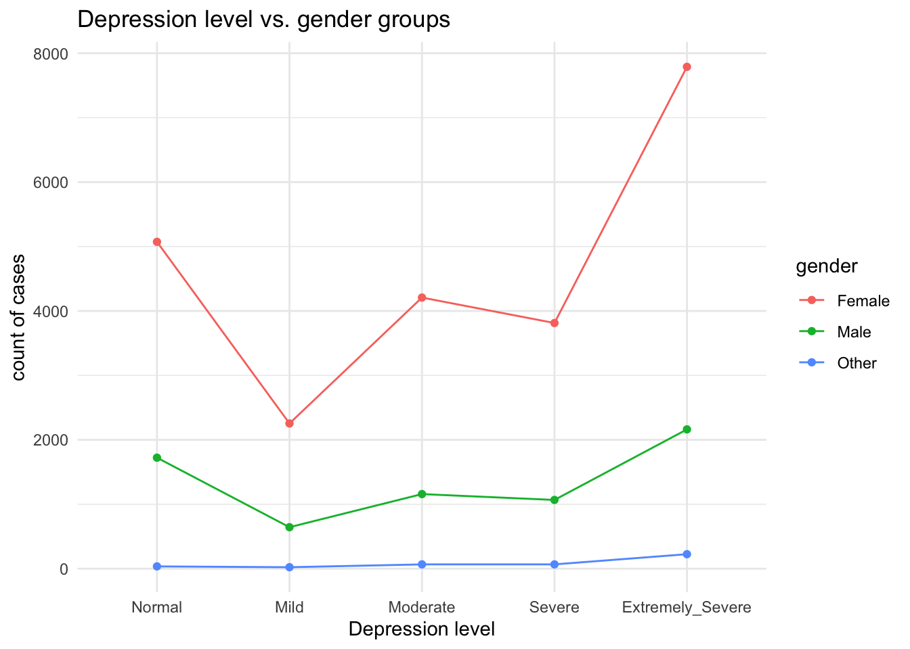

Exploratory Data Analysis
Shiny app
The data we used to analyze potential factors of depression levels
comes from a worldwide survey. The raw data includes 9 potential
factors:country, education,
urban, gender, religion,
orientation, race, married, and
age. We would like to focus on country,
orientation, gender, age, and
race to analyze the relationship between these factors and
depression level. This shiny app
provides visualizations of depression levels for individual countries on
a global scale. A screenshot is shown below:

Plots
Depression Level vs. Orientation vs. Gender
First, we would like to observe the distribution of depression levels according to orientation and gender. The plot below shows the number of different depression level cases in each gender groups among orientation.
dass_new|>
group_by(gender, orientation)|>
summarise(Normal = sum(depression_level=="Normal"),
Mild = sum(depression_level=="Mild"),
Moderate = sum(depression_level=="Moderate"),
Severe = sum(depression_level=="Severe"),
Extremely_Severe = sum(depression_level=="Extremely severe"),
.groups = "keep")|>
pivot_longer(
Normal:Extremely_Severe,
names_to = "Level",
values_to = "count")|>
mutate(Level = factor(Level, levels = unique(Level)))|>
ggplot(aes(x = Level, y = count, fill= gender)) +
geom_col()+
theme_minimal()+
facet_grid(~orientation)+
theme(axis.text.x = element_text(angle = 45, hjust = 1)) +
labs(x = "Depression level",
y = "count of cases",
title = "Depression level vs. orientation vs. gender")
From the plot, we observed that female gender group tends to have a higher number of depression cases in all orientation groups compared with other gender groups.
Depression level vs. Orientation
Next, we would like to delve deeper into studying the relationship between the level of depression and orientation.
dass_new|>
group_by(orientation)|>
summarise(Normal = sum(depression_level=="Normal"),
Mild = sum(depression_level=="Mild"),
Moderate = sum(depression_level=="Moderate"),
Severe = sum(depression_level=="Severe"),
Extremely_Severe = sum(depression_level=="Extremely severe"))|>
pivot_longer(
Normal:Extremely_Severe,
names_to = "Level",
values_to = "Count")|>
mutate(Level = factor(Level, levels = unique(Level)))|>
ggplot(aes(x = Level, y = Count, group = orientation, color = orientation)) +
geom_point()+
geom_line()+
theme_minimal()+
labs(x = "Depression level",
y = "count of cases",
title = "Depression level vs. orientation groups")
Depression level vs. Gender
# distribution histogram of gender
dass_new|>
group_by(gender)|>
summarise(Normal = sum(depression_level=="Normal"),
Mild = sum(depression_level=="Mild"),
Moderate = sum(depression_level=="Moderate"),
Severe = sum(depression_level=="Severe"),
Extremely_Severe = sum(depression_level=="Extremely severe"))|>
pivot_longer(
Normal:Extremely_Severe,
names_to = "Level",
values_to = "Count")|>
mutate(Level = factor(Level, levels = unique(Level)))|>
ggplot(aes(x = Level, y = Count, group = gender, color = gender)) +
geom_point()+
geom_line()+
theme_minimal()+
labs(x = "Depression level",
y = "count of cases",
title = "Depression level vs. gender groups")
Depression Level vs. Race groups
dass_new|>
# form new race groups
mutate(race = case_when(race == "Native American" ~ "Other",
race=="Arab"~ "Other",
race == "Indigenous Australian" ~ "Other",
race == "Other" ~ "Other",
race == "Black" ~ "Black",
race == "White" ~ "White",
race == "Asian" ~ "Asian"))|>
group_by(race)|>
summarise(Normal = sum(depression_level=="Normal"),
Mild = sum(depression_level=="Mild"),
Moderate = sum(depression_level=="Moderate"),
Severe = sum(depression_level=="Severe"),
Extremely_Severe = sum(depression_level=="Extremely severe"))|>
pivot_longer(
Normal:Extremely_Severe,
names_to = "Level",
values_to = "Count")|>
mutate(Level = factor(Level, levels = unique(Level)))|>
ggplot(aes(x = Level, y = Count, group = race, color = race)) +
geom_point()+
geom_line()+
theme_minimal()+
labs(x = "Depression level",
y = "count of cases",
title = "Depression level vs. race groups")
Age Distribution for Each Depression Level
dass_new %>%
ggplot(aes(x=depression_level, y=age)) +
geom_boxplot(aes(fill=depression_level)) +
labs(title = "Age Distribution for Each Depression Level",
xlab = "Depression Level",
ylab = "Age")+
theme_minimal()Depression Level vs. Age groups
dass_new|>
# form age groups
mutate(age = case_when(age <= 18 ~ "teenage",
age <= 25 & age >18 ~ "young adult",
age <= 50 & age >25 ~ "adult",
age >50 ~ "older"))|>
group_by(age)|>
summarise(Normal = sum(depression_level=="Normal"),
Mild = sum(depression_level=="Mild"),
Moderate = sum(depression_level=="Moderate"),
Severe = sum(depression_level=="Severe"),
Extremely_Severe = sum(depression_level=="Extremely severe"))|>
pivot_longer(
Normal:Extremely_Severe,
names_to = "Level",
values_to = "Count")|>
mutate(Level = factor(Level, levels = unique(Level)))|>
ggplot(aes(x = Level, y = Count, group = age, color = age)) +
geom_line()+
geom_point()+
theme_minimal()+
labs(x = "Depression level",
y = "count of cases",
title = "Depression level vs. age groups")
Chi-squared Test
From the plots above, we observed that the distribution of cases of
different depression levels among different orientation groups, the
distribution of cases of different depression levels among different
gender groups, the distribution of cases of different depression levels
among different age groups, and the distribution of cases of different
depression levels among different race groups follow a similar pattern.
Thus, we would like to perform a chi-squared test to study if these
factors and depression levels are associated.
1: Orientation & Depression Level
\(H_0\): The depression levels and
orientation are independent.
\(H_1\): The depression levels and
orientation are associated.
# show result table to perform chi-squared test
dass_new|>
group_by(orientation)|>
summarise(Normal = sum(depression_level=="Normal"),
Mild = sum(depression_level=="Mild"),
Moderate = sum(depression_level=="Moderate"),
Severe = sum(depression_level=="Severe"),
Extremely_Severe = sum(depression_level=="Extremely severe"))## # A tibble: 5 × 6
## orientation Normal Mild Moderate Severe Extremely_Severe
## <chr> <int> <int> <int> <int> <int>
## 1 Asexual 354 139 267 282 607
## 2 Bisexual 588 304 655 665 1709
## 3 Heterosexual 5040 2053 3722 3238 6206
## 4 Homosexual 273 142 276 254 603
## 5 Other 577 283 513 508 1051# perform chi-squared test
chisq.test(pull(dass_new, orientation), pull(dass_new, depression_level))|>
broom::tidy()|>
knitr::kable()| statistic | p.value | parameter | method |
|---|---|---|---|
| 404.2459 | 0 | 16 | Pearson’s Chi-squared test |
The null hypothesis for the chi-squared test is that the depression
levels and orientation are independent. Since the p-value is smaller
than 0.05, the null hypothesis is rejected.
We may conclude that orientation is associated with depression
levels.
2: Gender & Depression Level
\(H_0\): The depression levels and
gender are independent.
\(H_1\): The depression levels and
gender are associated.
# show result table to perform chi-squared test
dass_new|>
group_by(gender)|>
summarise(Normal = sum(depression_level=="Normal"),
Mild = sum(depression_level=="Mild"),
Moderate = sum(depression_level=="Moderate"),
Severe = sum(depression_level=="Severe"),
Extremely_Severe = sum(depression_level=="Extremely severe"))## # A tibble: 3 × 6
## gender Normal Mild Moderate Severe Extremely_Severe
## <chr> <int> <int> <int> <int> <int>
## 1 Female 5073 2254 4208 3813 7789
## 2 Male 1723 644 1158 1067 2162
## 3 Other 36 23 67 67 225# perform chi-squared test
chisq.test(pull(dass_new, gender), pull(dass_new, depression_level))|>
broom::tidy()|>
knitr::kable()| statistic | p.value | parameter | method |
|---|---|---|---|
| 135.6119 | 0 | 8 | Pearson’s Chi-squared test |
The null hypothesis for the chi-squared test is that the depression
levels and gender are independent. Since the p-value is smaller than
0.05, the null hypothesis is rejected.
We may conclude that gender is associated with depression levels.
3: Age & Depression Level
\(H_0\): The depression levels and
age are independent.
\(H_1\): The depression levels and age
are associated.
dass_chi <- dass_new|>
# form age groups
mutate(age = case_when(age <= 18 ~ "teenage",
age <= 25 & age >18 ~ "young adult",
age <= 50 & age >25 ~ "adult",
age >50 ~ "older"))
# show result table to perform chi-squared test
dass_chi|>
group_by(age)|>
summarise(Normal = sum(depression_level=="Normal"),
Mild = sum(depression_level=="Mild"),
Moderate = sum(depression_level=="Moderate"),
Severe = sum(depression_level=="Severe"),
Extremely_Severe = sum(depression_level=="Extremely severe"))## # A tibble: 4 × 6
## age Normal Mild Moderate Severe Extremely_Severe
## <chr> <int> <int> <int> <int> <int>
## 1 adult 1949 709 1176 934 1789
## 2 older 240 64 116 75 192
## 3 teenage 1235 555 1256 1327 3105
## 4 young adult 3408 1593 2885 2611 5090# perform chi-squared test
chisq.test(pull(dass_chi, age), pull(dass_chi, depression_level))|>
broom::tidy()|>
knitr::kable()| statistic | p.value | parameter | method |
|---|---|---|---|
| 651.3207 | 0 | 12 | Pearson’s Chi-squared test |
The null hypothesis for the chi-squared test is that depression
levels and age are independent. Since the p-value is smaller than 0.05,
the null hypothesis is rejected.
We may conclude that age is associated with depression levels.
4: Race & Depression Level
\(H_0\): The depression levels and
race groups are independent.
\(H_1\): The depression levels and race
groups are associated.
dass_chi <- dass_new|>
# form new race groups
mutate(race = case_when(race == "Native American" ~ "Other",
race=="Arab"~ "Other",
race == "Indigenous Australian" ~ "Other",
race == "Other" ~ "Other",
race == "Black" ~ "Black",
race == "White" ~ "White",
race == "Asian" ~ "Asian"))
# show result table to perform chi-squared test
dass_chi|>
group_by(race)|>
summarise(Normal = sum(depression_level=="Normal"),
Mild = sum(depression_level=="Mild"),
Moderate = sum(depression_level=="Moderate"),
Severe = sum(depression_level=="Severe"),
Extremely_Severe = sum(depression_level=="Extremely severe"))## # A tibble: 4 × 6
## race Normal Mild Moderate Severe Extremely_Severe
## <chr> <int> <int> <int> <int> <int>
## 1 Asian 4254 1851 3368 2944 5624
## 2 Black 105 30 64 71 162
## 3 Other 893 378 682 679 1388
## 4 White 1580 662 1319 1253 3002# perform chi-squared test
chisq.test(pull(dass_chi, race), pull(dass_chi, depression_level))|>
broom::tidy()|>
knitr::kable()| statistic | p.value | parameter | method |
|---|---|---|---|
| 154.3871 | 0 | 12 | Pearson’s Chi-squared test |
The null hypothesis for the chi-squared test is that depression
levels and race groups are independent. Since the p-value is smaller
than 0.05, the null hypothesis is rejected.
We may conclude that race is associated with depression levels.
Based on the performed tests, orientation, gender, age, and race are strongly associated with depression levels.